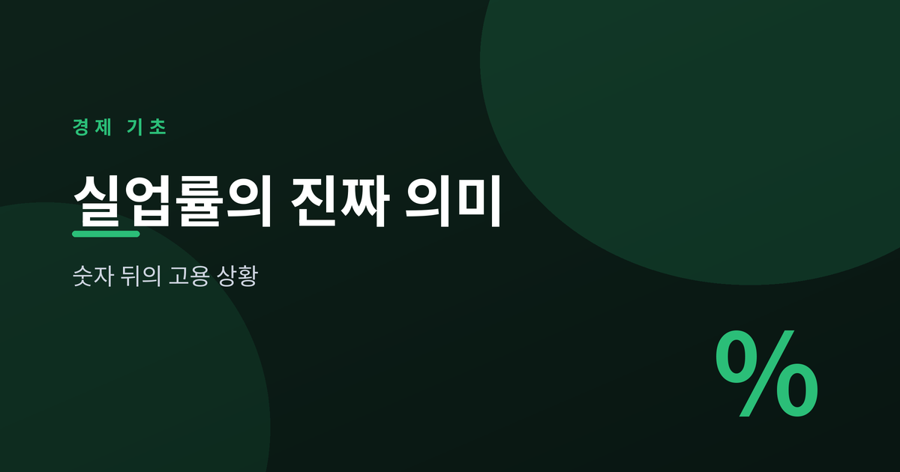
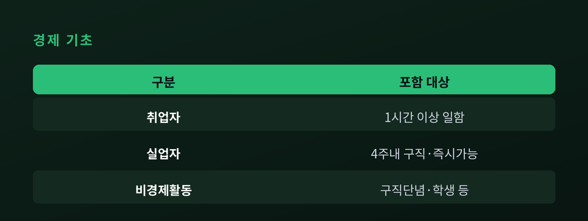
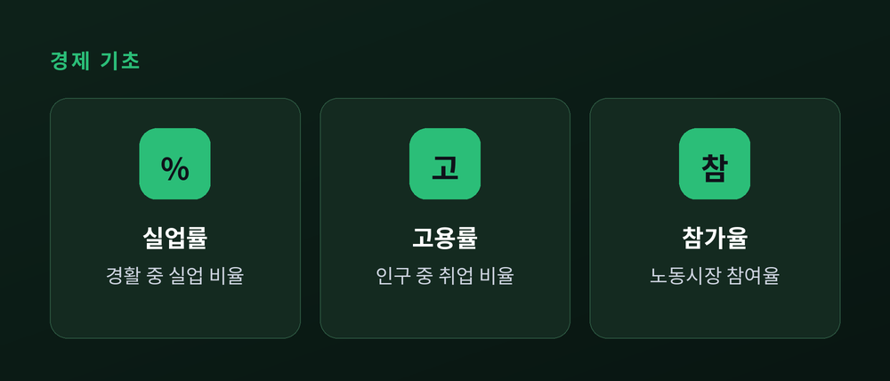
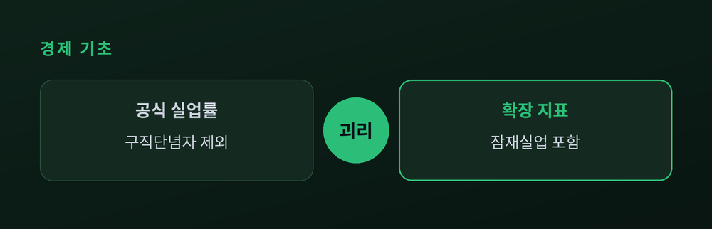

숫자 뒤에 숨은 진짜 고용 상황

실업률이 낮아졌다는 뉴스를 보면 고용 상황이 좋아졌다고 느끼기 쉽습니다. 그러나 체감과 다를 때가 많습니다. 왜 그런지 지표의 구조부터 살펴봅니다.
실업률은 경제활동인구 중 실업자의 비율입니다. 여기서 분모가 전체 인구가 아니라는 점이 중요합니다. 15세 이상 인구는 먼저 경제활동인구와 비경제활동인구로 나뉩니다. 경제활동인구는 다시 취업자와 실업자로 나뉩니다.
실업자에는 엄격한 기준이 있습니다. 통계청 기준으로 조사 기간에 일하지 않았고, 지난 4주간 적극적으로 구직활동을 했으며, 일자리가 주어지면 즉시 일할 수 있는 사람만 실업자입니다. 세 조건을 모두 충족해야 합니다.

실업률만으로는 그림이 완성되지 않습니다. 세 지표를 같이 봐야 합니다.
| 지표 | 분모 | 재는 것 |
|---|---|---|
| 실업률 | 경제활동인구 | 일자리 못 찾은 비율 |
| 고용률 | 15세 이상 인구 | 실제 일하는 비율 |
| 참가율 | 15세 이상 인구 | 노동시장 참여 비율 |
고용률은 분모가 전체 인구라 비경제활동인구의 영향을 덜 받습니다. 그래서 실업률의 착시를 보완하는 지표로 자주 쓰입니다.

가장 큰 맹점은 구직단념자입니다. 오래 일자리를 찾다 지쳐 구직을 포기한 사람은 '지난 4주간 구직활동' 조건을 못 채웁니다. 그래서 실업자가 아니라 비경제활동인구로 분류됩니다.
여기서 역설이 생깁니다. 구직 포기자가 늘면 분모인 경제활동인구가 줄어, 오히려 실업률이 낮아 보일 수 있습니다. 취업준비생도 마찬가지입니다. 통계와 체감이 벌어지는 핵심 이유입니다.
이 괴리를 메우려고 확장된 지표가 있습니다. 미국은 U-6, 한국은 고용보조지표를 발표합니다. 이 지표들은 구직단념자 같은 잠재 실업자와 더 일하고 싶은 시간관련 추가취업가능자까지 포함해 체감에 더 가깝습니다.

실업률은 여전히 유용합니다. 매월 표본조사로 꾸준히 작성되어 흐름을 비교하기 좋고, 국제 기준을 따라 만들어집니다. 다만 한계도 분명합니다. 나라마다 취업자 구성과 사회안전망이 달라 단순 비교가 어렵고, 위에서 본 분류의 사각지대가 있습니다.
그래서 한 숫자에 기대기보다 실업률, 고용률, 참가율, 확장지표를 함께 읽는 습관이 필요합니다. 이 글은 개념 설명이며 특정 투자 판단을 권하는 내용이 아닙니다.
정리하면, 실업률은 노동시장의 한 단면일 뿐입니다. "낮은 실업률이 곧 좋은 고용은 아니다." 숫자 하나에 안심하거나 실망하기 전에, 그 뒤에 서 있는 사람들을 한 번 더 떠올려 봅니다.